<--img class="lazy" data-src="https://raw.githubusercontent.com/williamkpchan/williamkpchan.github.io/master/LibDocs/ChineseMed/wuxing.png"-->
目录

综合论治便秘篇
朱秉宥 便秘证治

孟景春 治疗便秘从脏论治

岑鹤便 秘通治疗各类虚证便秘
沈家骥 治疗便秘的经验
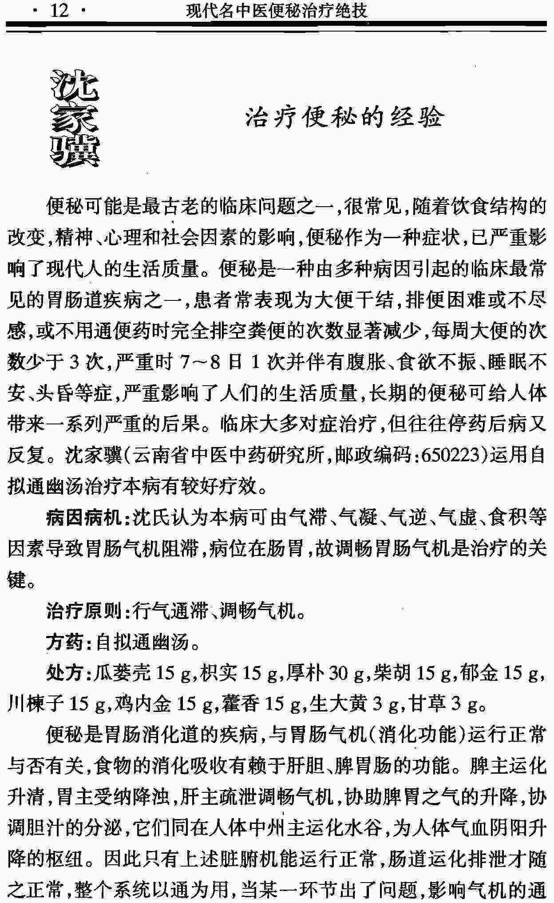胡福山 便秘的诊断方法
欧阳可尧 便秘证治七则
彭家谋 便秘治疗16法
武维权 便秘治疗医案3则
杜德明 和胃汤 治疗慢性便秘
梁基英 归蓉五仁汤 治虚秘
裘黎明 从气调治便秘
孟景春 气虚便秘专药一一自术
田社清 自拟八咖汤治疗慢性功能性便秘
武维权 梗阻性便秘验案1则
朱小红 出口梗阻性便秘术后护理
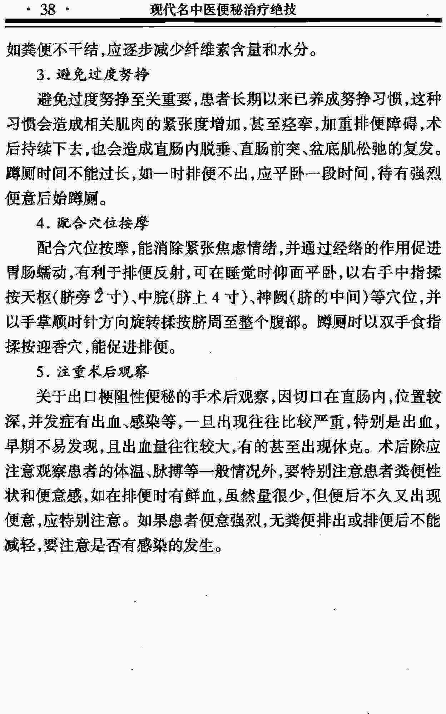藩昌绵 自拟大黄附子姜黄汤治冷秘
藩昌绵 自拟顺气涤疸丸治疗顽固疸秘气秘
邓泽潭 便秘辨治8法
贾宏斐 便秘分三类饮食巧选择
郭燕 便秘的辨证护理
高淑粘 便秘患者药物禁忌有学间
钱俊华 紫草油塞鼻治便秘
习惯性便秘篇
施奠邦 辨治习惯性便秘
施汉章 重用白术治疗习惯性便秘
戴春禧 补中益气汤临床运用体会
章晓华 健脾温中化湿治羚秘
何爱玲 习惯性便秘证治心法

李树标 巧用草决明茶治疗习惯性便秘
肖绍坚 麻仁通腑汤治疗习惯性便秘
李金海 擅用大柴胡汤内服灌肠治疗习惯性便秘
单兆伟 治疗习惯性便秘验案4则
杨友鹤 自拟益血涧肠汤治疗习惯性便秘
李培 从肝脾肾论治习惯性便秘
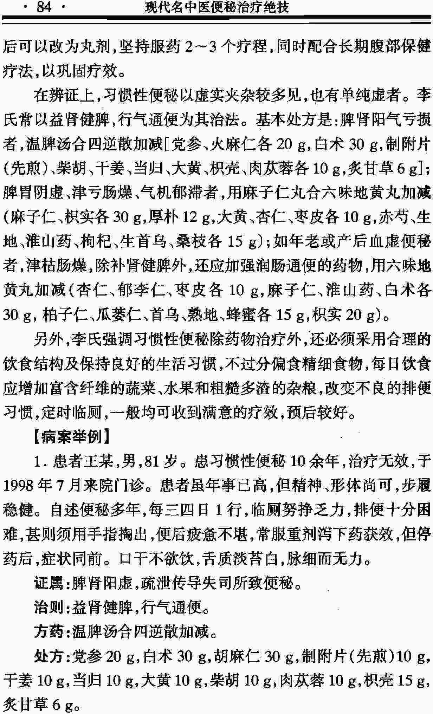聂桂宁 加昧增液汤治疗习惯性便秘
谭红 益气养阮汤
杨留志 芍药甘草汤加昧治疗老年习惯性便秘
欧琴 治便秘3原则

陈文华 习惯性便秘证治5原则
朱进忠 辨治习惯性便秘6方
杨少山 用增液汤治疗习惯性便秘验案2则
刘青 加味乌芍枳术汤治疗习惯性便秘
许鑫梅 治疗习惯性便秘经验泷析
余增锁 益肾运脾治疗习惯性便秘
刘恩乐 自拟润肠汤治疗习惯性便秘
易菊清 归蜜熊治疗习惯性便秘

徐仁莲 治疗习愤性便秘验方1首
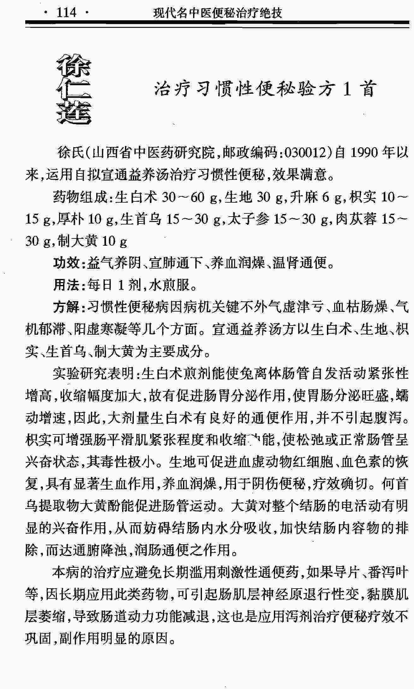俞宜年 讨人配型人治疗习惯性便秘
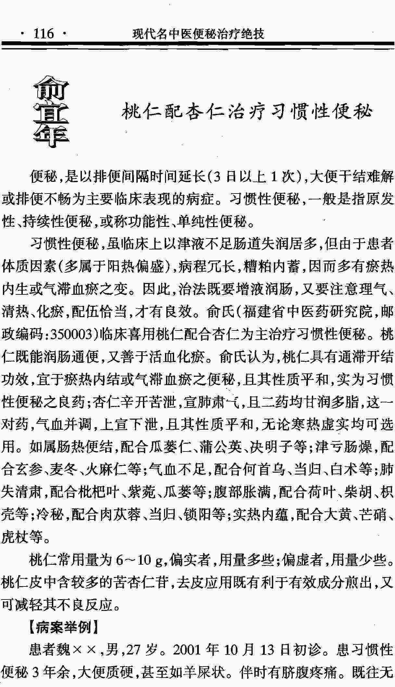陈玉峰 硝黄粉
钱郁平 健脾益肾,澡补润肠治便秘
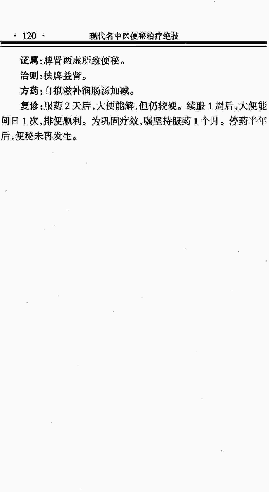魏战美 理肺治疗习惯性便秘
高志林 疏肝解郁健脾和胃 治疗习惯性便秘
翁工清 生地白术桃花汤治疗老年习惯性便秘
老年习惯性便秘验案
王洪自拟除秘汤治疗老年人习惯性便秘
谭嘉宁 益气涧下法治疗老年习惯性便秘
魏远征 黄芪汤治老年习惯性便秘

孙建国 补肺启肾治便秘
成城 承父业擅治便秘
朱媛慧 谈老年习惯性便秘的中医护理
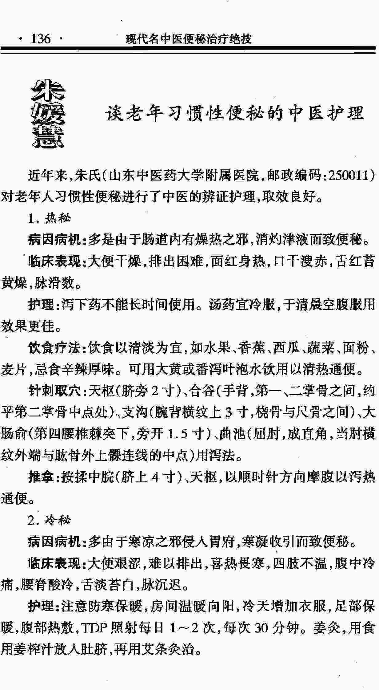黄永生 益胃通阻,泻热护阴治热秘
杜长欣 中药加穴位按压治疗老年性习惯性便秘
崔德芝 耳穴压豆治疗习惯性便秘
王联庆 耳穴贴压合针刺足三里治便秘
刘克奇 穴位贴敷治疗习惯性便秘验案1则
吕海平 耳压王不留行治习惯性便秘

吴娆灵 针刺治疗习惯性便秘
小儿便秘篇
王烈 治疗小儿便秘举限
林伟中药治疗小儿便秘性肠梗阻
雷兆芳 按摩手掌反应区治疗小儿便秘
褚付英 推拿治疗小儿便秘(4
管建红 小儿推拿治疗便秘验案1则
老年便秘篇
邓铁涛 医案1则
陆永昌 激肾益气养血润肠按摩治老年便秘
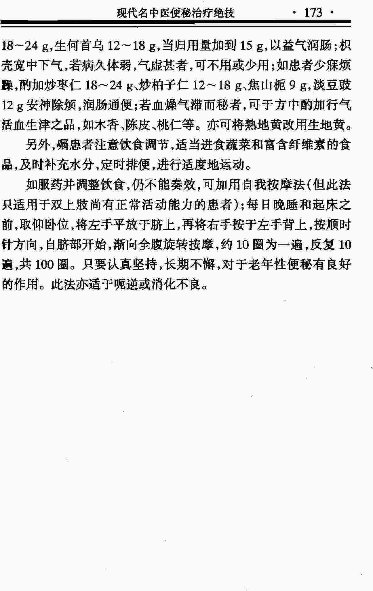张东岳 自拟秘宝康治疗老年便秘
张东岳 擎用培元丹治疗老年便秘

藩维 王氏保赤丸治验1则
黄彬 湿肾缩尿法治秘
武永钦 验案1炊
武维权 养血润燥通便老年性便秘治愈
房少青 巧用下法治疗老年便秘
杨修策 操用柏术汤治疗老年便秘
梁小夏 益气活血通秘
禹晓红 益气润肠法治疗老年性便秘
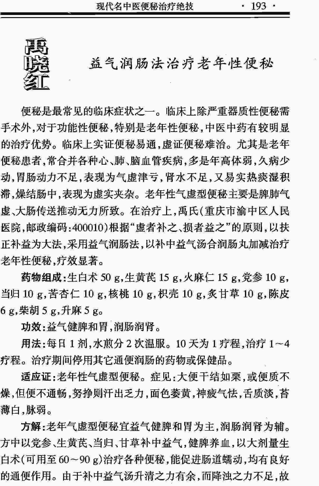韩文德 自拟益气润肠汤治疗老年便秘
石勤生 增水行舟法治虚秘
周利峰 润肺健脾治秘
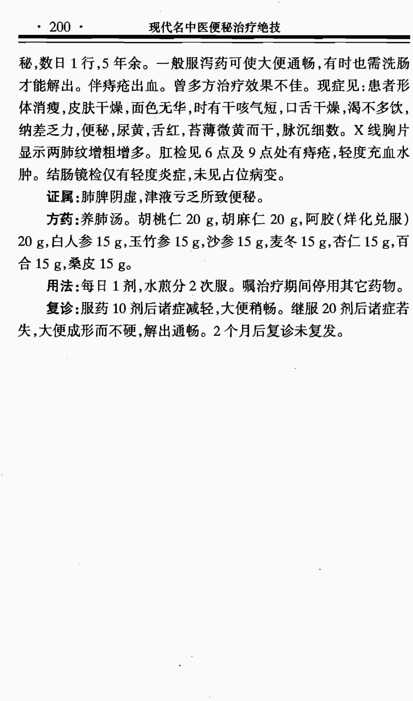王泉英 老年便秘的治疗体会
冯锦伦 益气补血治虚秘
冯年荣 擅用增昧增液汤治老年虚证便秘
张东岳 治老年便秘经验
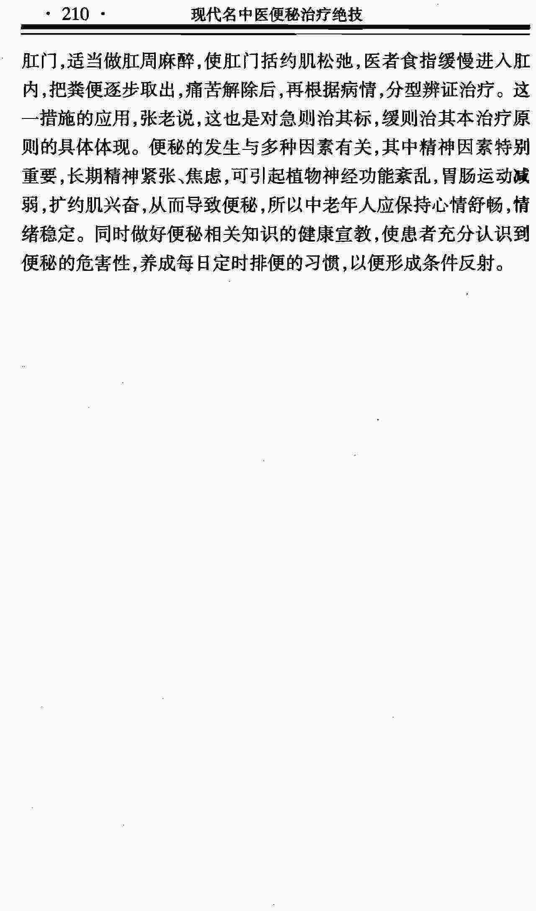王勇 峻泻药缓用 巧用大黄芒硝
张长顺 辨治老年便秘验案4炎

唐伟节 辨治老年便秘
赵秋英 如何护理老年便秘患者
晁岳汉 益气舒肝养血补肾治秘
张前进 老年便秘验案2则
陈曦 老年便秘治验
郡一萍 辨证施护老年便秘

臧力学 老年顽固性便秘治验1则(
杜丽芬 针药并用治疗老年顽固性便秘
张惠葛 老年性便秘的辩证施护及预防
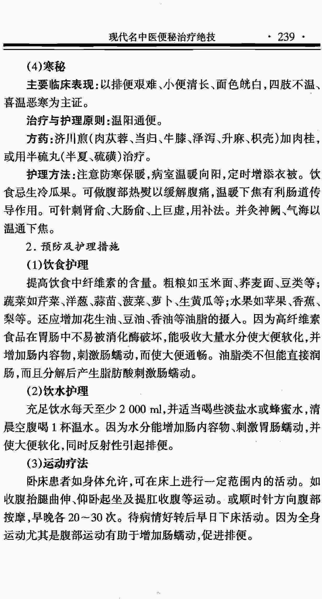赵昂之 老年便秘治疗心得
陈希明 保和丸加显治老年便秘

胜卫军 从虚论治老年便秘

非药物疗法治疗便秘篇
藩振扬 便秘自然疗法
周桂芳 按摩治疗便秘
吴友佳 便秘的自我综合疗法
赖也 便秘食疗方种种(
容小翔 便秘的食物禁忌(
妇人便秘篇
龚效基 妊娠便秘验案1则
申文萍 产后便秘的辨证施护
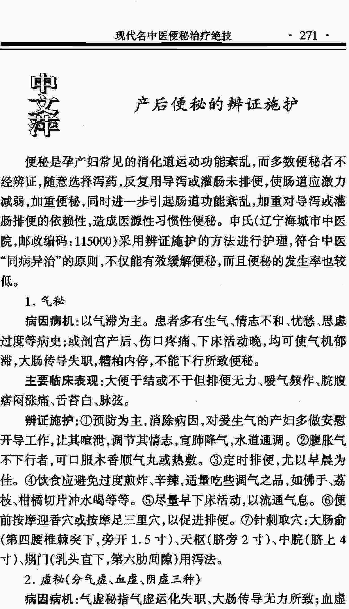梁兆松当归灰蓉汤治产后大便难
刘春熙 产后功能性便秘重在养血润肠
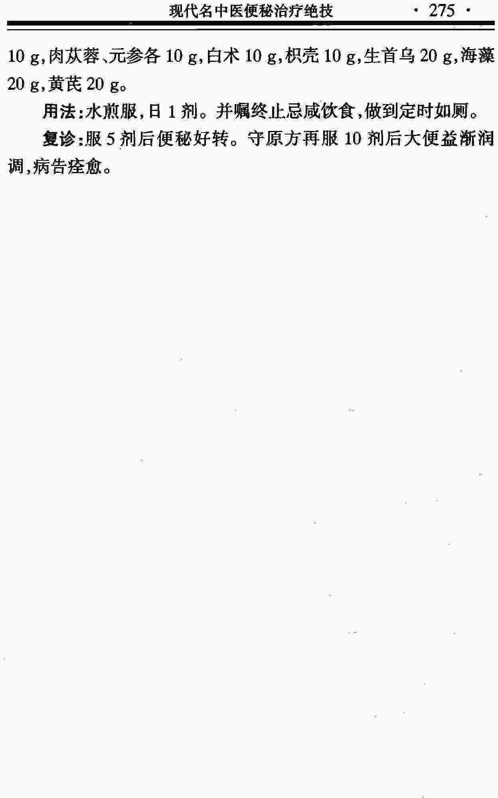刘春熙 产后气随血耗补中气助便通
刘春熙 疏肝调脾通便治产后便秘验案1则
陈棣兰等 子宫后位性便秘的诊治
武俊 流产后二便不通验案!例
高志勤 中药治疗妊娠期便秘
其他
王艺 辨证护理老年股骨颈骨折并发便秘
付朝霞 黄龙汤治疗老年便秘
杨国栋 桃仁承气汤治疗胸腰椎压缩骨折后腹胀便秘

刘道生 胸腰椎压缩性骨折早起腹胀便秘
胡艳 老年瘫疾患者便秘致发热的特点与治疗
程蔼隽等 半枝莲治疗癌症患者便秘
梁广新 糖尿病合并便秘的辨证分型
全小林 糖尿病便秘的中医治疗
杨忠伟 II型精尿病患者阴虚肠燥型顽固性便秘的治疗
佟建明 脑血管病后长期卧床患者便秘的预防和护理

任义 应用大黄治疗冠心病合并便秘

陈国生 中药灌肠治疗癌症便秘
暴银素 骨科患者腹胀便秘的护理对策
 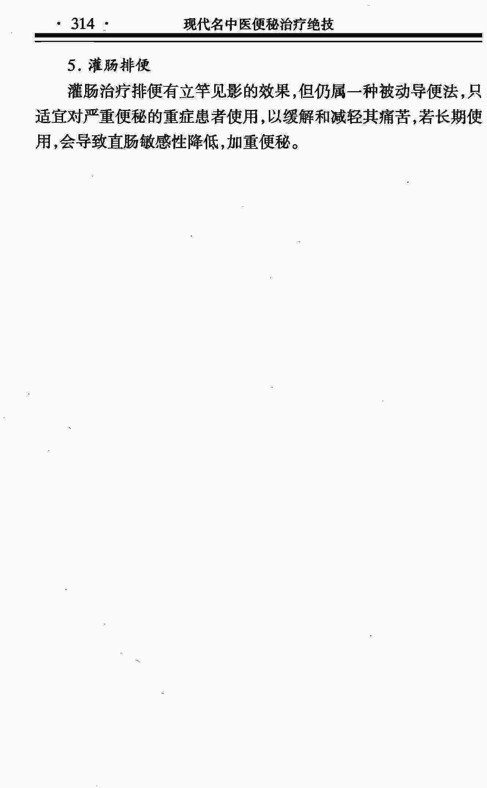
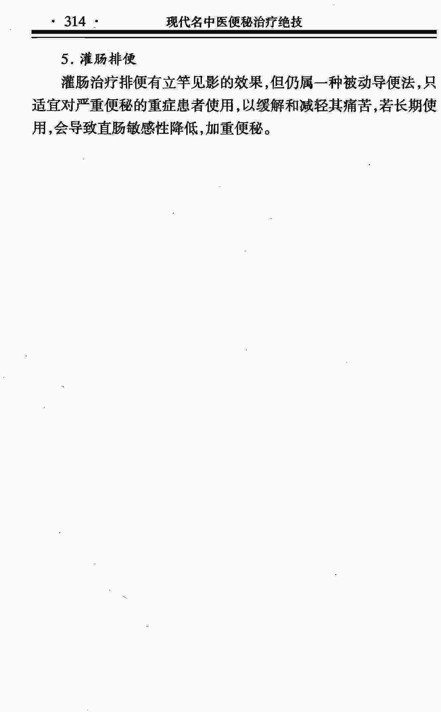
魏学东 辨治胸腰椎压缩性骨折早期伴腹满胀痛便秘
邰东旭 大承气汤加减治疗腰椎骨折便秘
魏绪华 单用炒莱萼子治疗氯氮平致便秘
何文绍 抵当甘草汤治疗外伤性便秘
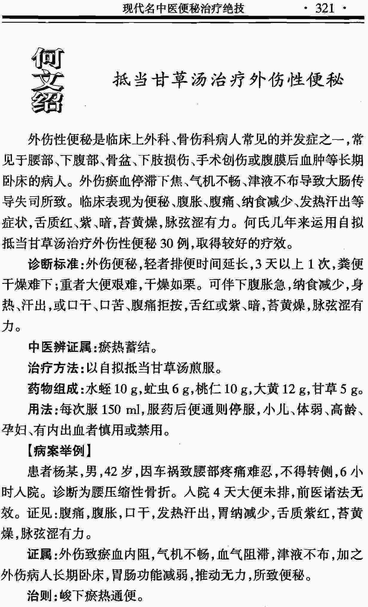王振涛 调畅肠脑法 巧治肺心病
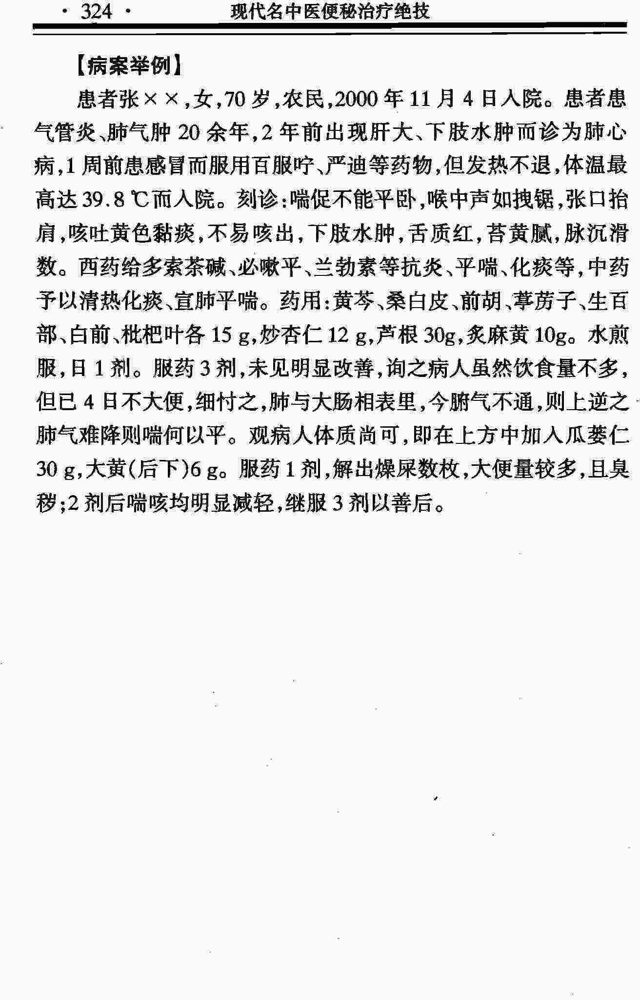王振涛 治心力衰竭勿忘调畅大便(
王振涛 调肠畅腑法论治冠心病便秘
王振涛 浅论高血压病便秘
王振涛 论高脂血症便秘的治疗
王照腾等 中医辨治中风后便秘
欧阳菊 中医缓下法加针刺对脑卒中便秘症

类承法 重用白术预防急性心肌梗塞后便秘
单苏圆等 中医辨证治疗药物依赖性便秘
 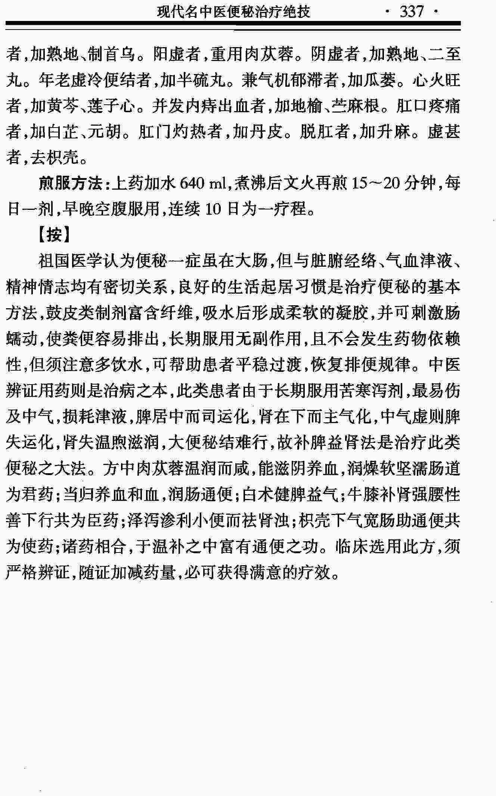
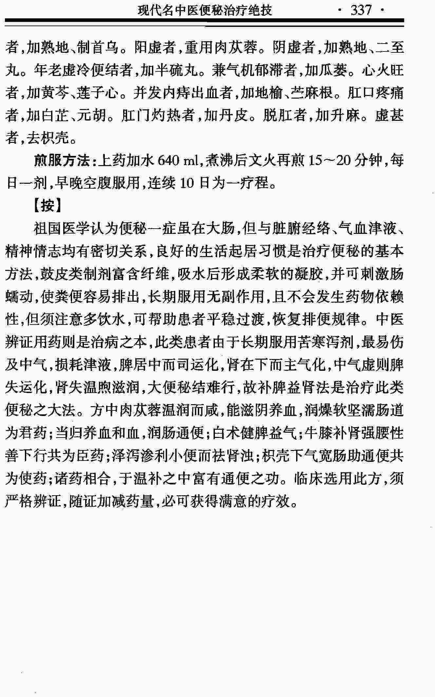